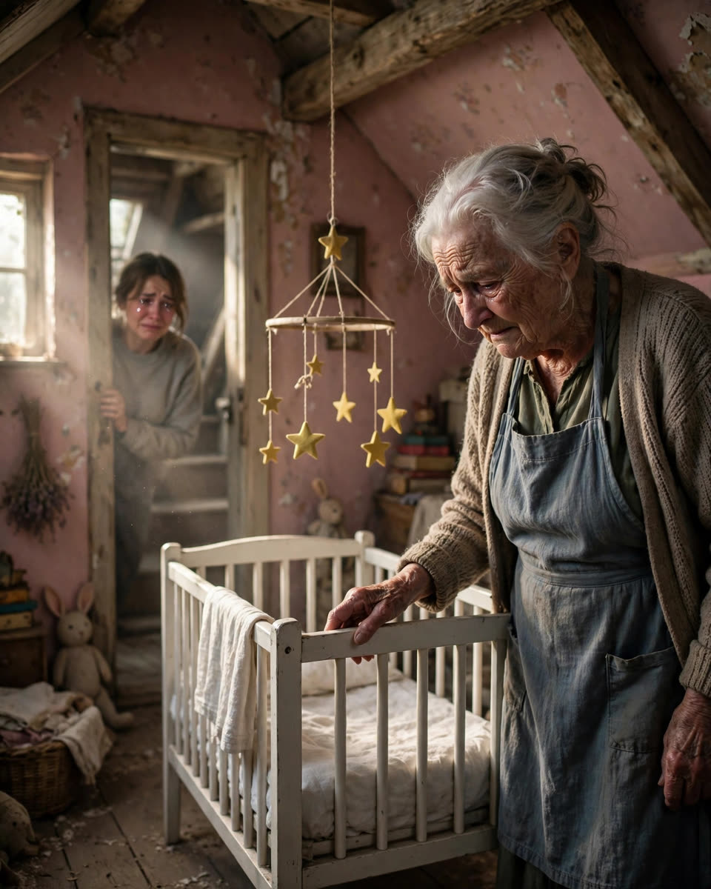

The Nursery 🍼
A Clipp Kaili original story

There was a nursery in my grandmother's attic — a crib, tiny folded clothes, a mobile of yellow stars — for a baby who never came home.
I found it on a Saturday in October, hunting for her Christmas decorations.
The attic door stuck. The bulb swung on its cord. And there, behind forty years of boxes and old curtains, was a narrow door I had never noticed in thirty years of visiting this house.
Pink walls.
A white crib.
Dust, thick as snow.
I stood in that doorway so long my legs went numb.
My grandmother has four grandchildren. She babysat every one of us. She sang us to sleep, bandaged our knees, slipped us candy when Mom wasn't looking.
She had never — not once, not ever — mentioned a nursery in her attic.
Fifty-eight years. She had carried this alone since before my mother was born — through birthdays and holidays and a thousand ordinary Tuesdays, smiling, humming, rolling out pie dough, while a whole pink room waited upstairs in the dark.
I stepped inside. The floorboards creaked under my weight, loud in the stillness.
I touched the mobile. The yellow stars turned slowly, chiming a lullaby with no one left to hear it.
I stood there a long time, listening to that tiny music in the dusty silence. Somewhere below me, my grandmother's television murmured. She had no idea I was upstairs. She had no idea her secret had just stopped being a secret.
On the dresser: a folded blue blanket, soft with age. A pair of knitted booties no bigger than my thumb. And a framed photograph, lying face down.
My hands shook as I turned it over.
Not a photograph. A hospital bracelet, pressed behind the glass. Adult-sized. Dated March 1968.
And a name I didn't recognize, written in my grandmother's young, looping handwriting on a slip of paper beneath it.
"Thomas."
I carried that frame downstairs like it might shatter.
"Grandma?" I said. "What's in the attic?"
The color drained from her face so fast I thought she might faint right there at the kitchen table.
"Nothing," she said quickly. Too quickly. "Old junk. Don't go poking around up there."
But her hands were shaking. And my grandmother's hands never shook — not when she rolled pie crust, not when she threaded needles, not ever.
That night I called my mother. My voice didn't sound like mine.
"Mom. Did Grandma ever lose a baby?"
Silence. The long kind.
"Where did you hear that?" she said finally.
"So it's true."
Another silence, even longer. "Your grandmother had a son before me. He lived three days. She doesn't talk about it. Don't ask her about it."
But I couldn't stop thinking about that room. That crib. Those yellow stars turning for no one.
At work, I'd catch myself staring at nothing. At night, I'd lie awake picturing her — young, grieving, painting a nursery pink while carrying a secret she'd keep for longer than I'd been alive.
All week, the image followed me — the booties, the blanket, the bracelet behind glass.
The next Saturday I drove back. The whole drive, I rehearsed what I'd say, and every version sounded wrong. You don't just walk into your grandmother's kitchen and detonate fifty-eight years of silence.
She was in the kitchen, humming, flour on her hands, rolling out dough like everything was perfectly fine.
"Grandma," I said from the doorway, "I need to ask you about Thomas."
The humming stopped mid-note.
She stood at the counter for a long time, staring at nothing, flour drifting off her fingers.
Then she wiped her hands on her apron and walked — slowly, like every step cost her something — to the hallway.
She climbed the attic stairs without a word.
She pushed open the nursery door.
And standing in that pink room full of dust and ghosts, my eighty-six-year-old grandmother said the words she had carried alone for fifty-eight years:
"I've been waiting for someone to ask."
She told me the whole story standing in that nursery, her voice steady in the way only very old grief can be steady.
March 1968. A boy, six weeks early, not much bigger than the booties in the dresser. Three days in an incubator. She held him once — once — before he was gone.
"They told me not to name him," she whispered, touching the crib rail. "The nurses said it would be easier if I didn't. I named him Thomas anyway."
She had bought the crib before he was born. She painted the room pink because the doctor guessed wrong about the baby. She kept everything — every onesie, every blanket, every tiny sock — because giving it away felt like losing him twice.
For fifty-eight years, she dusted that room every spring. Alone. Telling no one.
"I wasn't hiding him," she said, crying quietly among the yellow stars. "I just didn't know how to tell a happy family about a sad baby."
I called my mother. I called my brother. I called everyone.
The next Sunday, we all climbed those attic stairs — my mother, my brother, our kids — and we stood together in that little pink room.
My mother took Thomas's framed bracelet downstairs and hung it in the hallway, right between our school portraits.
"He's family," she said firmly. "He was always family."
And then my grandmother did something beautiful.
She packed every tiny outfit, every blanket — all of it, washed and folded with her shaking hands — and we drove it all to the county hospital's neonatal unit.
The nurse who accepted the box cried when Grandma explained who Thomas was.
"They'll go to the babies fighting the hardest," the nurse promised.
On the drive home, my grandmother held my hand in the back seat like I was the small child.
"Fifty-eight years," she said, smiling through her tears. "My boy finally got to help somebody."
The nursery is empty now. The crib went to a young cousin expecting her first baby.
But every spring, my grandmother still climbs those attic stairs.
Only now she goes up to remember — not to hide.
This story is a work of fiction, written to touch hearts and bring families closer.
← Back to all stories